How to install Restack and use every part of it: the file list, emailing, templates, Settings and, for team admins, the admin console.
Getting started
What Restack does
Restack is an Outlook add-in for sending PODs. In an email thread, it lists every attachment once, shows you a small picture of each, and combines the ones you pick into one PDF. It then opens an email from one of your team's templates, with the recipients, message and accessorials filled in, or saves the PDF for you.
Everything happens in the side panel, on your computer. The attachments in Outlook aren't changed.
Install Restack
Your team admin sends you an install file, restack-team.xml. Then:
- Save the
restack-team.xmlfile. - Open aka.ms/olksideload. Outlook opens the Add-ins for Outlook window after a few seconds.
- Choose My add-ins. If an older copy (Restack or Thread Attachments) is under Custom Addins, choose … → Remove on it first. Removing it may also clear what's saved in it, like your own templates.
- Choose Add a custom add-in → Add from File, pick the file, and choose Install.
New Outlook and Outlook on the web show the Restack button right away. Classic Outlook can take up to a day.
No Add a custom add-in option? Your organization doesn't allow installing custom add-ins. An IT admin can deploy the same file from the Microsoft 365 admin center (Settings → Integrated apps).
Keep the install file within your team: it carries your team's key, which opens your team's templates.
Open Restack on a thread
- Select every email in the thread, so Restack can read all of their attachments.
- New Outlook and Outlook on the web: click the arrow next to the conversation to open it, then tick the checkbox at its top.
- Classic Outlook: click the arrow next to the conversation, click the first email under it, then hold Shift and click the last one.
- Click Restack on the ribbon. The panel lists every attachment once, oldest first, even if it was sent back and forth.
If only one email came through, a tip at the top says so. Its info icon shows how to select every email in your Outlook (New Outlook, Classic Outlook, or mail that isn't shown as conversations).
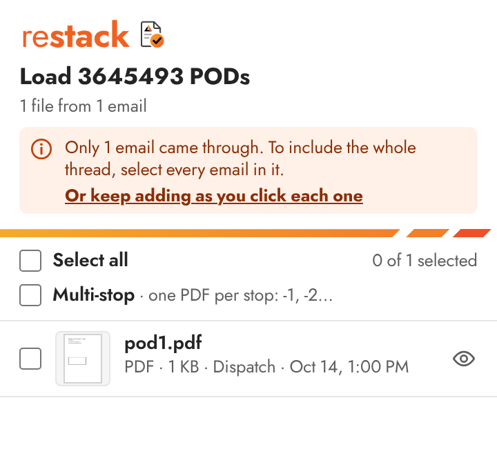
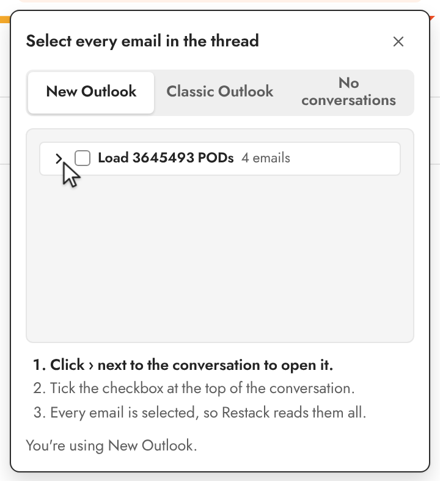
Keep adding
For mail that isn't shown as conversations. Pin the panel in Outlook, then turn on Keep adding (in the tip, or in Settings). Each email you click adds its files to the list.
- The bar at the top says how many emails are in. Start over starts a new list from the email you have selected; Turn off stops adding.
- If an email looks like a different load, Restack asks first: Add its files, or Start over with it.
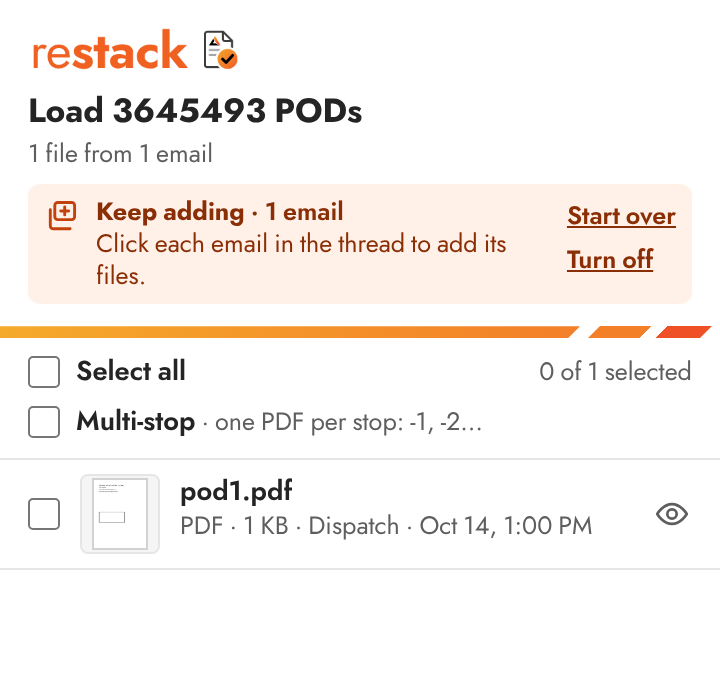
The file list
Check the files you want
Tick each file to put in the PDF, or Select all. Nothing is checked until you pick. Each file shows a small picture (page 1 of a PDF or fax, or the photo), so you can tell a POD scan from a photo of the truck.
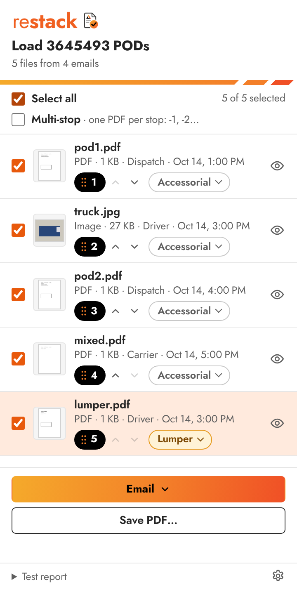
- What goes into the PDF
- PDFs (fax-style and JPEG 2000 scans too), photos and multi-page fax scans (TIFF). Word and Excel files, iPhone photos (.heic), attached emails and cloud links are listed but can't be combined yet. Photos go in at most 2000 pixels on their long side: the whole photo, smaller, never cropped.
- Logos and icons
- Pictures in email signatures, like logos, banners and social media icons, are hidden, whatever their size. A picture pasted into the message itself, like a screenshot of a receipt, stays in the list even when it's small. A small picture from a mail app that doesn't mark its signature is hidden too, since Restack can't tell where it is. Show logos & icons under the list shows the hidden ones.
- Views
- Settings → View shows the list as Large, Medium or Small pictures, a List, Details (with columns) or Tiles, like File Explorer.
Preview a file
Click a file's picture or its eye icon. The preview shows its pages (the first 40 of a long file), and the attachment itself is never changed:
- Leave a page out: untick it, for example a rate confirmation sent in the same PDF as the POD.
- Turn a page: the turn button on a sideways page or photo gives it a quarter turn per click.
- Reorder a scan's pages: the arrows next to each page move it up or down. Reset page order puts them back.
- Tag a page Lumper or Other (see Accessorial tags), and with Multi-stop, pick its stop.
- The arrows at the top go to the previous or next file. Include in PDF at the bottom checks or unchecks the whole file. The back arrow (or Esc) goes back to the list.
A PDF's pages can be left out, tagged and given a stop. A fax's (TIFF) pages can be moved and turned, but not left out or tagged.
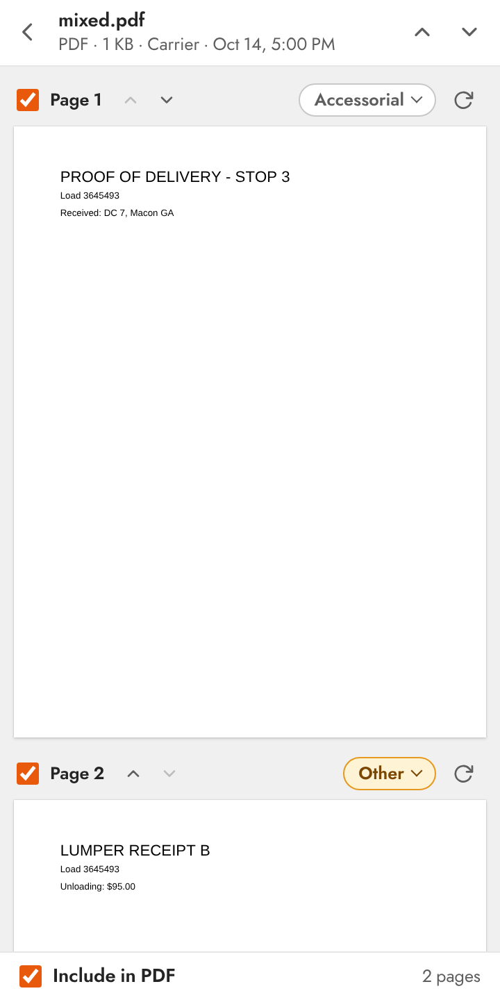
Put the files in order
Checked files are numbered in the order they go into the PDF. To change it, drag a file by its number, or use its up and down arrows. With the number selected, the ↑ and ↓ keys move it too. Files tagged Lumper or Other stay below the others.
Accessorial tags
Tag a lumper receipt (or another accessorial's paperwork) so it goes after the PODs and, with the right template, into a file of its own.
- Tag a file: each checked file has an Accessorial drop-down. Pick Lumper or Other. A tagged file goes to the bottom of the list, every time you tag it.
- Tag a page: for a PDF with the POD and a receipt in it, use the drop-down on the page in the preview. The file then says which pages are tagged, like Other: page 2, and its own tag says By page.
- Take a tag off: pick Not an accessorial.
- Detention and Layover aren't in the drop-down: the PODs are their paperwork.
- Tagging a file adds that accessorial on the Create email step, ready for its details.
Where tagged files go: after the PODs, in the same PDF. With a template set to Accessorials in a separate file, each one tagged gets a file of its own: 3645493 Lumper.pdf, and Other's named for its type, like 3645493 Scale Ticket.pdf. Save PDF never gives them a file of their own: they go last.
Tag accessorials by file name (in Settings, off to start): turn it on, and files with words like lumper or receipt in their name start out tagged Lumper. Your team admin sets the words. A tag you set by hand stays as you set it.
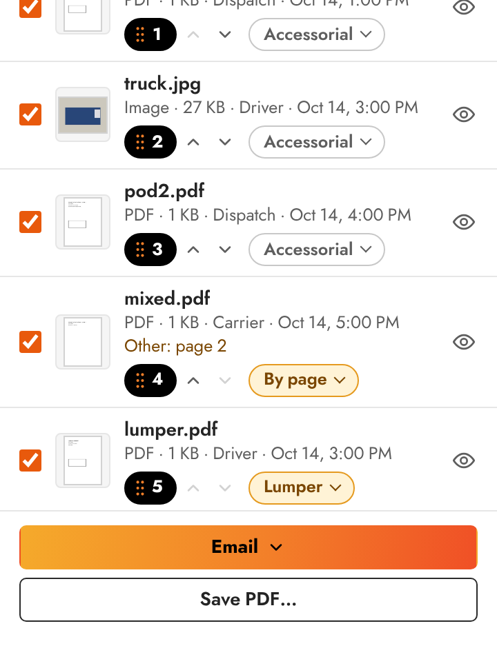
Multi-stop loads
- Tick Multi-stop above the list. Each checked file gets a stop number.
- Change a file's stop with its picker if it's wrong, or to put two photos in one stop.
- If one PDF holds several stops, open its preview and pick a stop for each page. Its picker then says By page.
Save PDF, Blank email and templates with Separate file for each stop ticked make one PDF per stop, named 3645493-1, 3645493-2 and so on. A stop's POD that comes in later can go out on its own as -2. Other templates put every stop in one file, in stop order (a new template starts with that box unticked). A file tagged Lumper or Other goes with the PODs' last stop; its picker changes that. On the Create email step, the Shipper or Receiver choices name the stop, like Receiver (Stop 2).
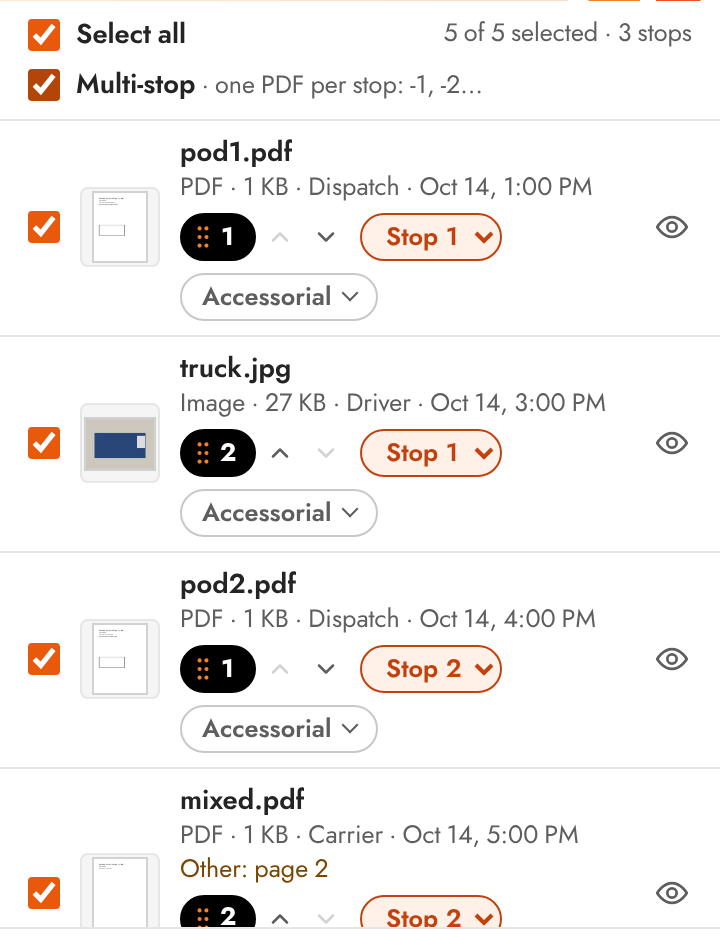
Rate confirmation check
If your team admin has added some of your rate confirmations to the check, pages that look like any of them are flagged in the list, and a warning shows above the buttons. They have to come out before you can email or save:
- Leave it out (or Leave them out, for more than one) unticks those pages, or the file.
- Not a rate con clears the warning for this thread.
Digital copies, scans and faxes of a rate con are caught, compared by their words and their layout. So are pages that say Rate Confirmation or Load Confirmation, and pages with the same barcode number as a flagged page. Phone photos of a rate con usually aren't recognized. The check reads the first 30 pages of a PDF and the first 10 of a fax. While it's still checking, Email and Save PDF wait: try again in a moment.
If a rate con gets through, tell your team admin: they can add it to the check (Team settings → Files), and from then on ones like it are caught too.
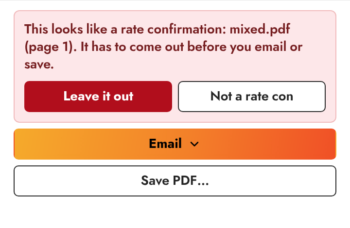
Emailing PDFs
Pick a template
Choose Email ▾. Your team's templates are listed A to Z, each with who it goes to.
- Pin the ones you use most: click the pin next to a template. Pinned templates stay at the top, and the arrows next to them put them in your order. The rest are under Other templates. Pins are saved for you.
- Accessorial Only templates, for customers that get the POD only when there's an accessorial, have their own section, closed to start.
- Blank email is just the PDF, with no recipients.
- My templates… opens your own templates, if your team allows them.
With the keyboard: ↑ and ↓ move through the menu, → reaches a template's pin, Alt+↑ or ↓ moves a pinned template, and Esc closes it.
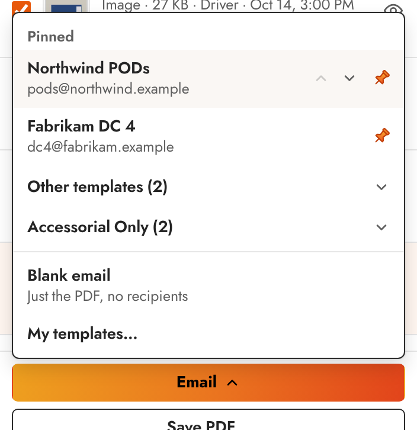
Template questions
Some templates ask a question or two first, in a pop-up. Each answer goes on to the next question, jumps ahead to a later one, goes on to the email, or stops with a message about what's missing, like Get a signed POD first. Back goes to the question before, and Cancel closes it. After a message that stops you, Change my answer goes back, and Close closes it.
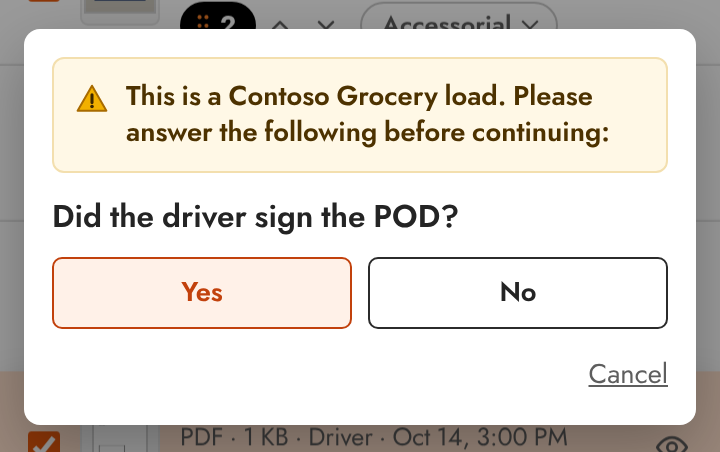
The Create email step
- Check the Load number. Restack fills it in from the thread's subject, or the one you used earlier on this thread.
- Type the BOL number: it goes in the subject, and Create email stays greyed out until it's in. For a load without one, tick No BOL and the subject leaves it out. Restack keeps either for the thread.
- The line under it says which files the email will get, and who it goes to.
- Add the load's accessorials, if any.
- Choose Create email. Cancel goes back to the list.
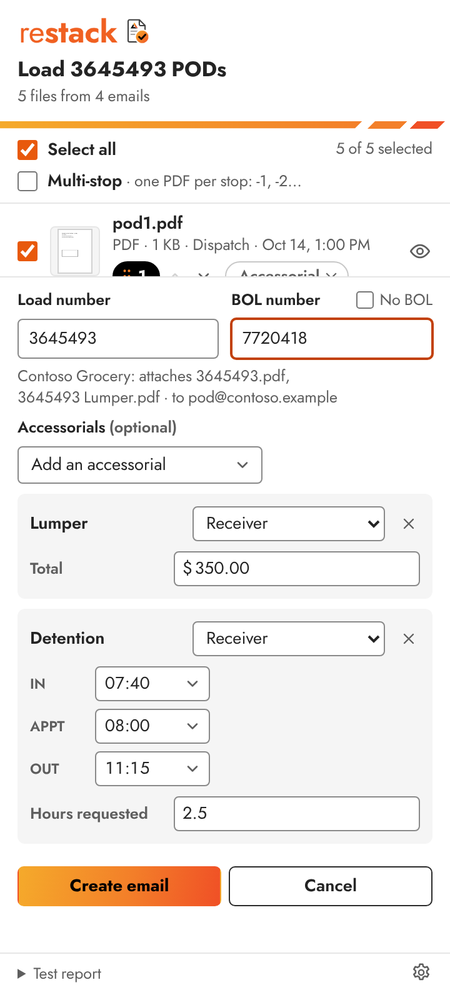
Accessorials
Add an accessorial adds each one the load has; several can go on one load. Each gets its own box, with a × to take it off. Every one needs Shipper or Receiver (or, on a Multi-stop load, the stop).
- Lumper
- The total.
- Detention
- IN, APPT and OUT times, and the hours requested.
- Layover
- The IN date and time, the APPT time, and the OUT date and time.
- Other
- Its type (like Driver Assist), an explanation, and a total if there is one.
They're written into the email's message in that order, Other under its type with your explanation. A template that's Accessorial Only needs at least one. A file tagged Lumper or Other brings its box; if you take that box off while the file is still tagged, Create email asks for it (or for the tag to change).
Typing times and dates
Times are 24-hour, like 14:30. Pick one from the list (every 15 minutes: the arrow on the box, or ↓), or type it: 830, 0830, 8:30a, 2:37 pm, 1430, noon and midnight all work. n is the time now.
Dates have a calendar (the button on the box, or Alt+↓), or type one: 10/19, 10-19-2026, 2026-10-19, Oct 19 or 19 October 2026. They show as 10/19/26. No year means this year. t or today is today; n is today, with the time now in its time box.
In the time list, ↑ ↓ move 15 minutes, Page Up and Page Down an hour, Enter picks and Esc closes it. In the calendar, the arrow keys move by day and week, Page Up and Page Down by month, Enter picks, and Today picks today.
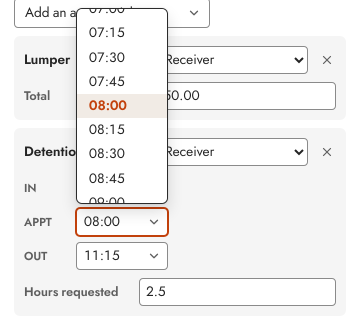
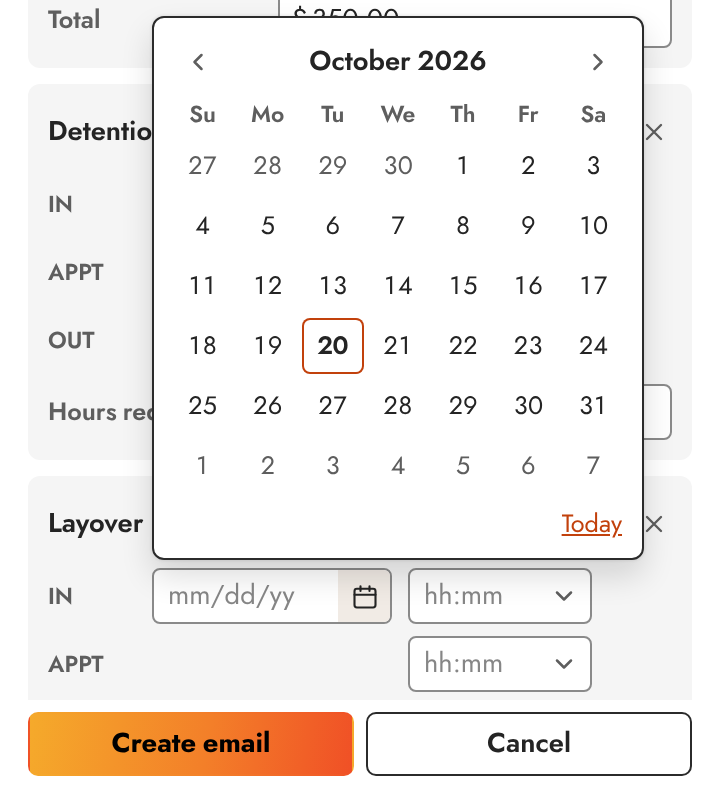
What the email has
- Subject: the load number, BOL number and POD(s), like
3645493 // 7720418 POD(s)(with No BOL,3645493 POD(s)). - To, CC and message: from the template, with the load number filled in, and the accessorials' details under the message. A template can also say No Lumper when Lumper isn't picked.
- The PDF, named after the load:
3645493.pdf(or the template's own name for it). See File names and sizes. - If your team turned on Sent with restack, a small "sent with restack" line goes under the message, above your own signature.
Attaching the PDF
If your team admin set up automatic attaching, the new email opens with the PDF already attached. If that doesn't work, the email still opens, the panel's status line says why, and you can attach it as below.
Otherwise, click Attach PDF on the new email's ribbon. If you haven't changed the email's subject, Restack attaches the PDF straight away; if you have, choose Attach PDF in the panel (or pick which email's files go on it). The PDF waits up to 2 hours, and only your latest one waits: attach it before you make the next email.
Accessorials in a separate email
With a template set to send accessorials separately, Create email opens two emails whenever an accessorial is picked (just the request, if only tagged files are checked):
- The POD email, with the usual subject and the PODs.
- The request, like
3645493 // 7720418 - Lumper/Detention(Other's type goes in it too), with the PODs and the accessorial files, each accessorial's details, and the template's own accessorial To, CC and message.
Didn't see the second email? Open it again under the panel's status line opens it again.
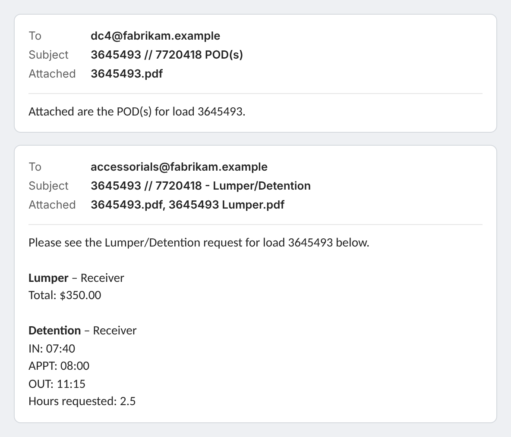
File names and sizes
- The PDF is named after the load (
3645493.pdf), or the template's PDF name with the load number in it. - Multi-stop: one PDF per stop,
3645493-1,3645493-2…, unless the template puts every stop in one file. - Accessorials in a separate file:
3645493 Lumper, and Other's named for its type, like3645493 Scale Ticket. On a Multi-stop load, one for each stop. - Every PDF stays under 10 MB. A bigger one is split, in page order, into
3645493-1,3645493-2and so on, all attached to the same email. A Lumper or Other file is split the same way, like3645493 Lumper-1. Stop files are kept whole, and so is a single page over 10 MB; the panel says so when that happens. - Every email stays under your team's email size limit (35 MB to start). Files travel in an email as text, about a third bigger, so a 35 MB email holds about 25 MB of PDFs. When a load's files would make it bigger, Restack makes the scanned pages and photos smaller: it redraws them at about 150 dpi, still easy to read, and typed pages stay as they are. The status line says so. If that still isn't enough, Create email opens two emails or more, like
3645493 POD(s) (1 of 2)and(2 of 2), with as many of the files in each as fit. Emails under the limit, and Save PDF, don't change.
Save PDF
- Choose Save PDF… under the Email button.
- Check the name (the load number is suggested) and choose Save.
You get one PDF (one per stop, with Multi-stop on), with any tagged files last, in your Downloads, in parts if it's over 10 MB. Where Outlook allows it and there's one file, Windows' Save As window opens so you can pick the folder. For several files, if Outlook asks about downloading multiple files, choose Allow; the panel also has a button for each file, in case one didn't come through.
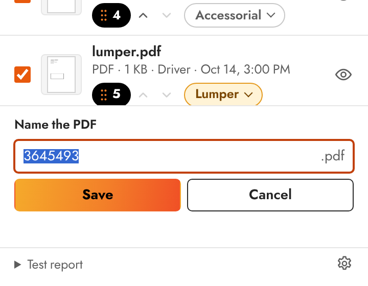
Settings
The gear at the bottom right of the panel, there whatever email is selected.
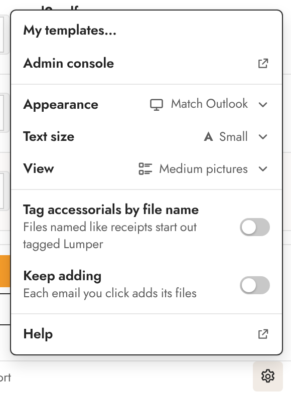
- My templates…
- Your own templates, when your team allows them.
- Admin console
- For team admins only: opens the admin console in your browser.
- Appearance
- Light, Dark, or Match Outlook.
- Text size
- Small, Medium or Large.
- View
- Large, Medium or Small pictures, List, Details or Tiles.
- Tag accessorials by file name
- Files named like receipts start out tagged Lumper. See Accessorial tags.
- Keep adding
- Each email you click adds its files. See Keep adding.
- Help
- Opens this wiki.
Your choices (and pins, and your own templates) are saved in your Outlook account. Outlook keeps about 32 KB of each person's Restack settings. A change that won't fit isn't saved: saving a template says so, and a Settings choice or a pin just doesn't stick.
Test report, at the bottom left, is a log of what Restack did. If something isn't working, choose Copy report and send it to your team admin. Esc closes whatever is open: a pop-up, the preview, a menu or the Create email step.
Templates
The team's templates are made by team admins, in the admin console. Reps can make their own, too, if the team admin allows it.
Your own templates
If your team admin turned on Reps' own templates, Settings → My templates… (also at the bottom of Email ▾) lists yours. New template makes one; Edit changes one. They're saved in your Outlook account, and only you see them. They show under Mine in the Email menu.
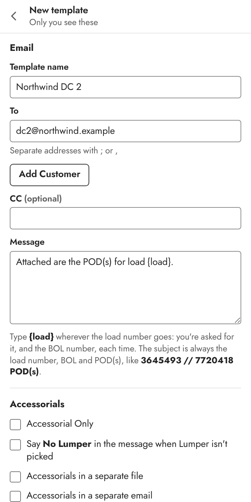
Every template option
- Template name, To (separate addresses with
;or,), CC (optional) and Message. - Type
{load}wherever the load number goes, in To, CC or Message (and the PDF name). You're asked for it, and the BOL number, each time. The subject is always the load number, BOL number and POD(s).
Accessorials
- Accessorial Only: for customers that get the POD only when there's an accessorial. It's listed under Accessorial Only in the Email menu, and Create email needs an accessorial picked.
- Say No Lumper in the message when Lumper isn't picked.
- Accessorials in a separate file: each accessorial tagged in the list gets a file of its own, like
3645493 Lumper. Off: tagged files go after the PODs, in the same file. - Accessorials in a separate email: two emails when an accessorial is picked. The request's To (blank: the same as the POD email's), CC and Message. In its message,
{types}is Lumper, Detention and so on.
- PDF name, with
{load}for the load number. - Separate file for each stop (Multi-stop loads). Off: all stops in one file, in stop order.
- Image POD? For a customer whose PODs are imaged in by printing them: when the email's created, the POD also opens in your browser with the print screen up. Pick the imaging printer and print; the imaging program's own windows are yours to fill in. It uses Attach automatically to get the PDF to your browser, and the print screen can be opened again from under the panel's status line for an hour.
Questions before Create email
- An opening line (
{company}shows the template's name), then up to 12 questions with up to 8 answers each. - Each answer goes to the next question, jumps ahead to a later one, continues to the email, or stops with your message.
A new template starts with every box unticked.
Several templates at once
On a new template (or a copy), Add Customer adds another template name and To. Saving (the button then says Save 3 templates, say) makes one template for each customer, all with the same CC, message, accessorial options, questions, PDF name and file options. Each can be changed on its own afterwards. Names and addresses copied from two columns in Excel paste in one go, up to 50 at a time.
Make a copy, or delete
Under a saved template: Make a copy starts a new template with the same settings, named "… (copy)". Delete this template asks you to click again, since there's no undo.
Admin console Team admins
The admin console is where the team's templates and settings are made, full size in your browser. Admins have one of two levels: Full admins get all of it, and template admins (Templates only) get the Templates and Usage tabs.
Open the console
In Restack, choose Settings → Admin console. Only team admins see it, at either level. The link carries your team key, and the browser keeps it so a bookmark to the console works next time (This browser removes it). With nothing published yet, whoever opens the console from Outlook sets up the team and becomes its admin. Someone who isn't on the team's list of admins (anymore) can't open it.
Publish to team
Your reps don't see changes until you publish. The top right of the console says when there are changes they can't see yet.
- Publish to team downloads
team.json. Upload it to your GitHub repository (Add file → Upload files → Commit changes). - With a GitHub token under Team settings → Tokens/Keys → Publishing, it goes straight to GitHub instead.
- Without a GitHub account: once your Restack Usage function is set up for publishing (its folder's README has the steps), it goes to GitHub through the function, with the admin key under Tokens/Keys → Usage counts. The function keeps the GitHub token, and it can only change
team.json. - Template admins always publish through your Restack Usage function, with their own keys. Their changes go straight to your reps, and the function turns away anything but templates.
- Unpublished changes stay in the browser they were made in. Publish to team adds them to what's already published, so changes another admin published in the meantime stay. If you both changed the same template or setting, it asks which to keep.
- Opening the console brings in what other admins have published since your changes began, and yours stay waiting to publish.
- It checks what's published on GitHub itself (the site can be a minute or two behind), so the latest is what your changes go on top of. If another admin's publish replaces yours with a version made from an older copy, the console brings your changes back to publish again.
Templates tab
The team's templates on the left, with search and New template; the template you pick opens on the right. The form has the same options as above, and Save template stays in sight at the bottom of the window as you scroll.
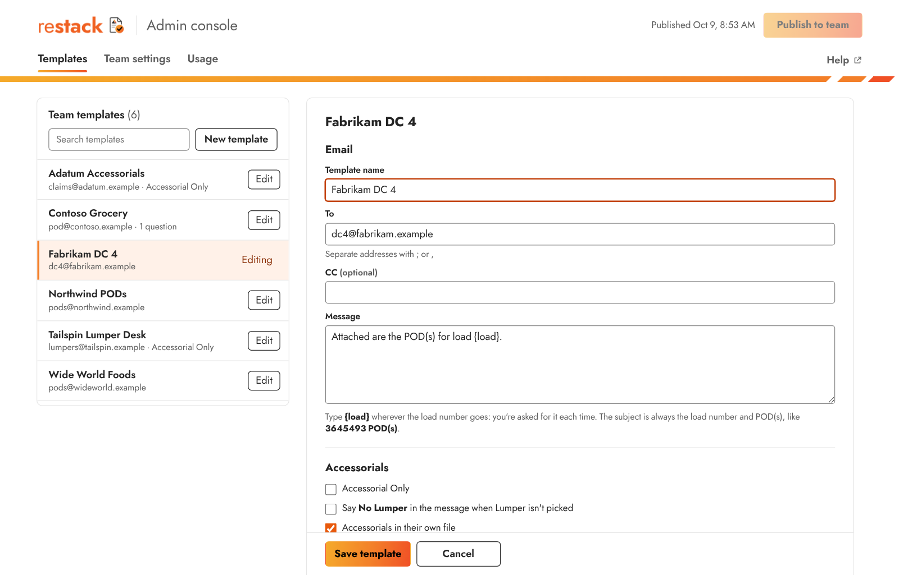
Team settings tab
Team settings are on four pages: Tokens/Keys, Files, Toggles and Admins. Click one in the list on the left to show it (on a narrow window, pick it from Go to). Each setting's card says how it's set. The console opens on the page you were on last. Changes reach your reps once you publish.
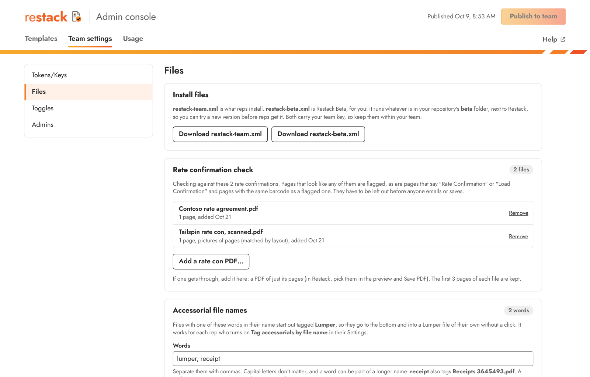
Tokens/Keys
- Publishing
- Your repository (
owner/repository) and, optionally, a GitHub token: a fine-grained personal access token for that one repository, with Contents: Read and write. Make one on GitHub under Settings → Developer settings → Personal access tokens → Fine-grained tokens. Tick Remember it in this browser to keep it after the tab closes. Test checks it; Remove the token forgets it. With no token here, Publish to team goes through your Restack Usage function when it's set up for publishing and the admin key is under Usage counts (the card's chip says Through Restack Usage, and Test checks the function). - Attach automatically
- Needs your own PDF Emails Azure Function App (its folder has the setup steps). Enter its address (its Default domain, from the Function App's Overview page) and an upload key (Generate, then Copy it into the Function App's
THREAD_ATTACHMENTS_UPLOAD_KEYsetting). Then Test connection, Save, and publish. Create email then opens with the PDF already attached, for everyone. - Usage counts
- Needs your own Restack Usage Azure Function App (its folder has the setup steps). Enter its address, a counting key (its
RESTACK_USAGE_KEYsetting; it's published with your templates, so reps' panels can send counts) and an admin key (RESTACK_USAGE_ADMIN_KEY; it stays in this browser and isn't published). Then the Usage tab shows everyone's numbers. With the function set up for publishing, the admin key also publishes, with no GitHub account. For template admins, Team key → Copy copies your team key for the Function App'sRESTACK_TEAM_KEYsetting, which lets the function check their keys and what they publish. Test connection says whether template admins can publish and see Usage. - This browser
- Remove them from this browser: your team key, usage admin key (or a template admin's own key), any remembered GitHub token, and changes you haven't published (it asks first). Do this on a shared computer.
Files
- Install files
- Download restack-team.xml, what your reps install, and restack-beta.xml, Restack Beta for you. Both carry your team key, so keep them within your team.
- Rate confirmation check
- The rate confirmations the check compares pages with. Add a rate con PDF… adds one (or several at once) to the ones it has; the first 3 pages of each are kept, up to 20 files. If one gets through, add it: a PDF of just its pages (in Restack, pick them in the preview and Save PDF). Remove takes one out; removing the last one turns the check off. Then publish.
- Accessorial file names
- The words for Tag accessorials by file name, separated by commas (
lumper, receiptto start). Capital letters don't matter, and a word can be part of a longer name. A Delivery Receipt is a POD, so that "receipt" doesn't count. - Email size limit
- The biggest email Create email makes, the way mail servers count it: 35 MB to start, which most Microsoft 365 mailboxes take. Type another size (5 to 150 MB) and Save, or Use 35 MB, then publish. What Restack does when a load's files would go over it.
Toggles
- Reps' own templates
- On: reps can make their own templates (Settings → My templates). Off: they use only the team's; their own stay in their Outlook either way.
- Sent with restack
- On: every email Restack creates, the accessorial email too, ends with a small "sent with restack" line under the message, above the rep's own Outlook signature.
Admins
- Team admins
- Everyone on the list gets Settings → Admin console in Outlook, and their own templates. Each has a level, picked next to their address: Full (everything in the console) or Templates only (a template admin). Add one by their email address and level (up to 20 of each); Remove takes one off, yourself too, but there's always a Full admin. Someone you add gets their access once you publish, and their team key comes with the
restack-team.xmlthey installed. Of their own, they need:- Full: the admin key, which they type once under Tokens/Keys → Usage counts (send it to them privately). With your Restack Usage function set up for publishing, that's all they need to publish, with no GitHub account, and it shows the Usage tab. Or their own GitHub access: as a collaborator on your repository, Publish to team downloads
team.jsonfor them to upload, or goes straight there with their own token. - Templates only: their own key. Restack makes it when you add them (or switch them to Templates only) and shows it once under the list: Copy it and send it to them privately: Restack in their Outlook asks for it once (Settings → Admin console). Restack doesn't keep it; New key makes another, and the old one stops working once you publish. They publish through your Restack Usage function, which needs
RESTACK_TEAM_KEY(see Usage counts). Don't give them GitHub access: a collaborator on your repository can change anything there.
- Full: the admin key, which they type once under Tokens/Keys → Usage counts (send it to them privately). With your Restack Usage function set up for publishing, that's all they need to publish, with no GitHub account, and it shows the Usage tab. Or their own GitHub access: as a collaborator on your repository, Publish to team downloads
Usage tab
What your team makes with Restack, once usage counts are set up.
- Pick the dates: Last 7 days, Last 30 days, This month, Last month, This year, or any From and To. The info button next to the dates says what's counted.
- The totals: emails created, PDFs saved, files combined, pages, rate cons caught, reps, and time saved. Time saved counts the minutes a Full admin sets per email created (3 to start; a POD email and its request count once) and per PDF saved (1 to start). They're the team's: change them on the Usage tab, then Publish to team.
- Per day, by rep and by template. Refresh gets the latest; Download CSV saves them.
An email for the same load and template counts once a day, however many times it's created. Only counts are kept: the rep's email address, when, the Restack version, how many files, pages and PDFs, the template's name, which accessorials, and whether it was split, Multi-stop, a separate email or attached automatically. Never the files, file names, load numbers or customer addresses.
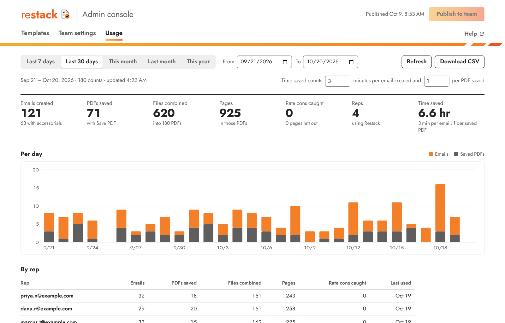
Template admins
A template admin (Templates only on the Admins page) makes, changes and deletes the team's templates and publishes them, and sees the Usage tab. Team settings, and who's an admin, are for Full admins.
- Their console has two tabs: Templates and Usage. Time saved uses the minutes a Full admin set.
- The first time, Settings → Admin console in Outlook asks for the key a Full admin sent them, and keeps it in their Outlook. Every console they open from there has it, on any computer, and it asks again only if a Full admin makes them a new key.
- Opened without their key (from a bookmark in another browser, say), or with one that's been replaced, the console says to open it from Outlook, which brings the key. Remove my keys from this browser, at the bottom, is for a shared computer.
- Publish to team goes through your Restack Usage function with their key, and straight to your reps. Only templates go in: the function checks the key against your team's list, and turns away anything else.
For the team admin Team admins
Set up your team
Do this once. You'll manage the team's templates, and only people you send the install file to can use the add-in.
- On the install page, choose Create team install file. It downloads
restack-team.xml. - Install it in Outlook, as in Install Restack.
- In Restack, choose Settings → Admin console. Add your templates there and choose Publish to team.
- Send the same
restack-team.xmlto your reps.
Keep that file. Choosing Create team install file again makes a new team key, which can't open the templates you've already published. You can download it again any time from Team settings → Files → Install files.
Update Restack
- Upload the new version's files to your repository, next to the ones already there. Keep the
team.jsonthat's there. - That's all: everyone gets the new version the next time they open the panel. If it still shows the old one, close and reopen Outlook.
Restack Beta
A second copy of the add-in, just for you, that runs whatever is in your repository's beta folder. It sits next to Restack in Outlook, so you can try a new version on real emails before your reps get it.
- Once: upload the
betafolder (a full copy of Restack) to your repository. - Once: in the admin console, choose Team settings → Files → Install files → Download restack-beta.xml and install it the same way. It shows up as Restack Beta, with a black β on its icon.
- Each new version: upload it into the
betafolder first and try it. When it's ready, upload the same files to the main folder.
Restack Beta uses your published templates and team settings. Its own choices (Appearance, Text size, View, the two switches, pinned templates), your own templates and any unpublished changes are kept apart from Restack's. Keep restack-beta.xml to yourself: it carries your team key.
Change the wording
Most labels reps see on the panel (Select all, Accessorial, Email, Create email, Detention, Include in PDF and so on) are in one list at the top of taskpane.js, called WORDS. Change the text between the double quotes, keep anything in {curly brackets}, and upload the file. An apostrophe is fine, but don't type a double quote inside the text: it stops the panel from loading. Each label changes everywhere it's used, including the email's accessorial lines.
Privacy
- The add-in runs inside Outlook. Attachments are read and combined on your computer.
- With automatic attaching on, PDFs made with Email are uploaded to your team admin's own Azure function, so Outlook can download them into the new email. Those links stop working after an hour, and the files are then deleted.
- With usage counts on, your panel sends counts to your team admin's own Azure function: your email address, when, the Restack version, how many files, pages and PDFs, the template's name, which accessorials, and whether it was split, Multi-stop, a separate email or attached automatically. Never the files, file names, load numbers or customer addresses.
- Team templates and settings are stored on the Restack site encrypted with your team's key. Only your install file and your team admins' console have it (and, with template admins, your team admin's own Restack Usage function, to check what they publish). Your own templates and choices are saved in your Outlook account.
Troubleshooting
- Only one email's files show up
- Select every email in the thread (how), or use Keep adding.
- A picture from the email isn't in the list
- Restack took it for a logo (which pictures it hides). Tick Show logos & icons under the list, then tick the picture. The test report says where Restack found each picture in the email.
- "This copy of Restack isn't set up for a team."
- It was installed some other way than from your team's install file. Remove it, and install the
restack-team.xmlyour team admin sent (how). - "This install file doesn't match your team."
- The file is old, or from another team. Ask your team admin for the current one.
- There's no Restack button on the ribbon
- Classic Outlook can take up to a day after installing. If it's still missing, install it again (how).
- Restack looks the same after an update
- Close and reopen Outlook.
- The Email menu says to check the files first
- Tick at least one file in the list.
- A page is flagged as a rate con, but it isn't one
- Choose Not a rate con (more).
- Create email asks for an accessorial
- The template is Accessorial Only, or a file is tagged Lumper or Other: add that accessorial, or change the file's tag (more).
- An email bounced because it was too big
- The customer's mailbox takes less than your team's email size limit; the bounce says the most it takes. Ask your team admin to set the limit to that or lower (Team settings → Files → Email size limit) and publish, then create the email again.
- Attach PDF can't find the PDF
- Create the email from Restack first. The PDF waits for up to 2 hours, and only the latest one waits.
- The admin console says "You're not one of your team's admins"
- You're not on the Admins page's list (anymore). A Full admin adds you there and publishes. If one just did, wait a minute or two for it to reach the site and click Try again.
- A template admin's key doesn't work
- If a Full admin has made them a new key since (New key, then publishing, turns the old one off), the console says so: they get the new one, and Settings → Admin console in Outlook asks for it. If publishing says
RESTACK_TEAM_KEYisn't set, a Full admin adds it to the Restack Usage Function App (Tokens/Keys → Usage counts has it to copy, and Test connection checks it). - I can't find My templates
- Your team admin has to turn on Reps' own templates and publish.
- A change in Settings or a pin didn't stick
- Outlook keeps about 32 KB of your Restack settings, your own templates included. Delete one of your templates you don't use and try again.
- Email and Save PDF say to try again in a moment
- Restack is still checking the files for rate confirmations. Wait a second and try again.
- Something else isn't working
- Open Test report at the bottom of the panel, choose Copy report, and send it to your team admin.